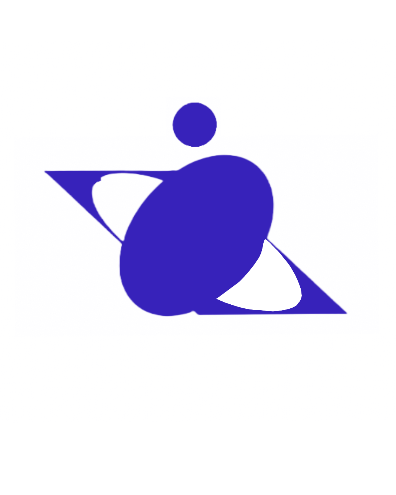

CSS
ZEN
GARDEN
A demonstration of what can be
accomplished through CSS-based design.
Select any style sheet from the
list to load it into this page.
Download the example:
HTML
CSS
✣THE ROAD TO ENLIGHTMENT!✣
Littering a dark and dreary road lay the past relics of browser-specific tags,
incompatible DOMs, broken CSS support, and abandoned browsers.
We must clear the mind of the past. Web enlightenment has been achieved thanks to the tireless efforts of folk like the W3C, WASP, and the major browser creators.
The CSS Zen Garden invites you to relax and meditate on the important lessons of the masters. Begin to see with clarity. Learn to use the time-honored techniques in new and invigorating fashion.
become one with the web...
B3com3 on3 w1th th3 w3b...
Bec_me o*e with th$ 0eb...
B3com3 on3 w1th th3 w3b...
Bec_me o*e with th$ web...
Be_xme 1ne w9xh thx web...
B3com3 on3 w1th th3 w3b...
Bec_me o*e with th$ 0eb...
become one with the web...become one with the web...
so what is this about?

There is a continuing need to show the power of CSS.
The Zen Garden aims to excite, inspire,
and encourage participation. To begin,
view some of the existing designs in the list.
Clicking on any one will load the style sheet into
this very page. The HTML remains the same,
the only thing that has changed is the external CSS file. Yes, really.
CSS allows complete and total control over the style of a
hypertext document. The only way this can be illustrated
in a way that gets people excited is by demonstrating what it
can truly be, once the reins are placed in the hands of
those able to create beauty from structure. Designers and
coders alike have contributed to the beauty
of the web; we can always push it further.
✺ There is a continuing need to show the power of CSS. The Zen Garden aims to excite, inspire, and encourage participation. To begin, view some of the existing designs in the list. Clicking on any one will load the style sheet into this very page. The HTML remains the same, the only thing that has
changed is the external CSS file. Yes, really.
☆PARTICIPATION! ☆

⁑ Strong visual design has always been our focus.
You are modifying this page, so strong CSS skills
are necessary too, but the example files are commented well
enough that even CSS novices can use them as starting points. Please
see the CSS Resource Guide for advanced tutorials and tips on working with CSS.
You may modify the style sheet in any way you wish, but not the HTML.
This may seem daunting at first if you’ve never worked this way before, but follow the listed links to learn more, and use the sample files as a guide.
Download the sample HTML and CSS to work on a copy locally. Once you have completed your masterpiece (and please, don’t submit half-finished work) upload your CSS file to a web server under your control. Send us a link to an archive of that file and all associated assets, and if we choose to use it we will download it and place it on our server.
ᕯBENEFITSᕯ
View the design's CSS.
CSS RESOURCES
faq
submit a design
translations
✸Why participate?
For recognition, inspiration, and a resource we can all refer to showing people how amazing CSS really can be.
This site serves as equal parts inspiration for those working on the web today, learning tool for those who will be tomorrow, and gallery of future techniques we can all look forward to.
☆ REQUIREMENTS! ☆
✤ Where possible, we would like to see mostly CSS 1 and 2 usage. CSS 3 and 4 should be limited to widely-supported elements only, or strong fallbacks should be provided. The CSS Zen Garden is about functional, practical CSS and not the latest bleeding-edge tricks viewable by 2% of the browsing public.
The only real requirement we have is that your CSS validates.Luckily, designing this way shows how well various browsers have implemented CSS by now. When sticking to the guidelines you should see fairly consistent results across most modern browsers. Due to the sheer number of user agents on the web these days — especially when you factor in mobile — pixel-perfect layouts may not be possible across every platform. That’s okay, but do test in as many as you can. Your design should work in at least IE9+ and the latest Chrome, Firefox, iOS and Android browsers (run by over 90% of the population).We ask that you submit original artwork.
Please respect copyright laws. Please keep objectionable material to a minimum, and try to incorporate unique and interesting visual themes to your work. We’re well past the point of needing another garden-related design.This is a learning exercise as well as a demonstration. You retain full copyright on your graphics (with limited exceptions, see submission guidelines), but we ask you release your CSS under a Creative Commons license identical to the one on this site so that others may learn from your work.
By Dave Shea. Bandwidth graciously donated by mediatemple. Now available: Zen Garden, the book.
HTML CSS CC
A11Y GITHUB
✷VIEW ALL DESIGNS:
MID CENTURY MODERN by Andrew Loham
GARMENTS by Dan Mall
STEEL by Steffen Knoeller
APOTHECARY by Trent Walton
screen filler by Elliot Jay Stocks
FOUNTAIN KISS by Jeremy Carlson
A ROBOT NAMED JIMMY by meltmedia
VERDE MODERNA by Dave Shea